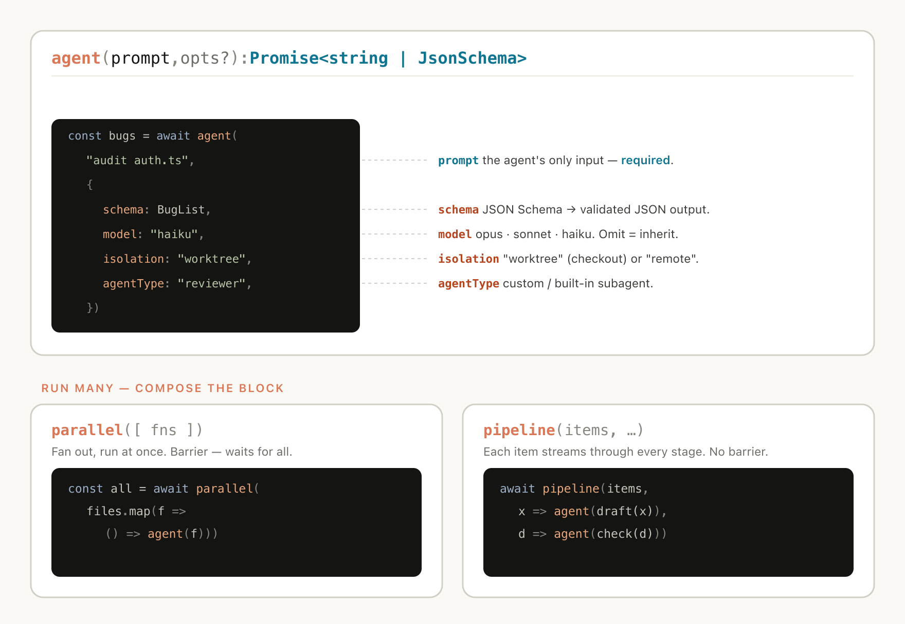
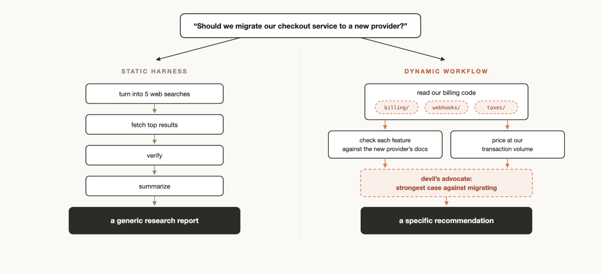
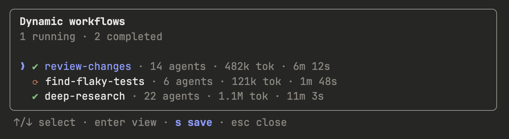

一条推文，凭什么值得花一篇文讲
2026 年 6 月初，Anthropic 的 Claude Code 团队成员 Thariq（@trq212）连发推文 + 长文，宣布 Claude Code 上线 Dynamic Workflows（动态工作流）。一句话概括：Claude 现在能现场给自己写一个"临时指挥官"，调度几十上百个 subagent 同时干活。
听起来又是一句 AI 厂商的 PR 黑话。但 Thariq 这次诚实地把三个问题摆到了台面上——这是 Anthropic 自己承认的、Claude Code 默认 harness 长期存在的三个失败模式：
Agentic Laziness
Claude 干完 50 件事里的 35 件就"宣布"完成。任务没真做完，但 Claude 觉得差不多了。
Self-Preferential Bias
让 Claude 评估自己写的东西，它永远觉得"还行"。让外部来评判才有意义。
Goal Drift
对话越长，目标越模糊。中间经历几次压缩（compaction），原任务的核心约束会被丢掉。
这三个问题不是 Claude 独有的，所有用 LLM 跑长任务的人都会遇到。Dynamic Workflows 就是 Anthropic 拿出的解法。
Dynamic Workflow 是什么
一句话定义：让 Claude 写一个 JavaScript 脚本，调度一批 subagent 在后台跑大型任务，session 保持响应，可中断可恢复。
官方的技术描述很平实：

拆开看有几个关键点：
- 脚本由 Claude 写：你不用写 JS，只用自然语言描述任务，Claude 现场生成一个 .js 脚本。
- 脚本里调"特殊函数"：这些函数是 Claude Code runtime 提供的，用来 spawn 和协调 subagent。
- 脚本还能用标准 JS：JSON、Math、Array 这些都有，可以处理数据、做循环、做条件分支。
- 可决定模型和 worktree：某个 subagent 用 Haiku 还是 Sonnet、某个 subagent 是不是要在独立 worktree 里跑，都由脚本说了算。
- 可中断可恢复：终端关了、电脑休眠了，回来 resume 同一个 session，workflow 从断点继续跑。
Thariq 用了两个词来形容这件事："Claude is now intelligent enough to write a custom harness tailor-made for your use case."——Claude 已经聪明到能给自己量身定制一个临时 harness 了。

这句话很关键。Anthropic 以前卖的是"通用 harness + Claude"，现在他们承认：每个任务的最优 harness 都不一样，与其自己维护几十个，不如让 Claude 自己造。
一张表说清楚：什么时候用哪个
Claude Code 现在有四种"派活"方式：subagents、skills、agent teams、workflows。官方文档给了一张对比表，我直接翻译 + 点评：
| 维度 | Subagents | Skills | Agent Teams | Workflows |
|---|---|---|---|---|
| 是什么 | Claude 现场 spawn 的打工仔 | Claude 遵循的一组指令 | 一个 lead agent 监督一组 peer | runtime 执行的脚本 |
| 谁决定下一步 | Claude，按 turn 决定 | Claude，按 prompt 决定 | lead agent，按 turn 决定 | 脚本 |
| 中间结果存在哪 | 主 context window | 主 context window | 共享 task list | 脚本变量 |
| 可复用什么 | worker 的定义 | 指令本身 | team 的定义 | orchestration 本身 |
| 规模 | 每轮几个 delegate 任务 | 同 subagent | 几个长跑 peer | 一次几十到几百个 agent |
| 中断行为 | 重启该 turn | 重启该 turn | 队友继续跑 | 同 session 可恢复 |
实战里怎么选？记住一句话：任务越"结构化"、越"可分支"、越"可中断"，越该用 workflow。
比如要扫 500 个文件做迁移——这个任务天然就是 for 循环 + 每个文件一个 subagent，workflow 写起来比让 Claude 现场调度稳得多。
Thariq 的 8 个神级 prompt（重点）
这是整篇文最值钱的部分。Thariq 在博客里贴了 8 个他自己写的 prompt，每个都示范了"用 workflow 解决一类问题"的范式。我直接搬运过来，每条配上中文场景注释 + 行动建议。

这 8 个 prompt 背后其实是这 6 种模式的组合。把图记在脑子里，下次写自己的 workflow 就有谱了。
它解决什么：偶发 bug 最怕"我重现不出来"。这个 prompt 让 workflow 起一批 subagent，每个跑一种竞争条件的假设。哪个 theory 经得起证据检验，bug 就是哪种。
你的场景：线上有偶发崩溃、偶发超时、偶发数据错乱？把"maybe 1 in N"替换成你的频率，"the race"替换成你怀疑的竞争条件。
调试 · 并行假设它解决什么：你可能反复纠正 Claude 同样的事——"别用这个库"、"别这么命名"、"别忘了 lint"。这些纠正应该沉淀到 CLAUDE.md，但靠人手动提炼很费劲。
你的场景：跑 50 个 session，让 workflow 派多个 subagent 并行扫，最后给你一份"高频纠正 → 建议规则"清单。
知识沉淀 · 流程优化它解决什么：团队里最有价值的洞察往往在聊天记录里、但没进工单系统。这条 prompt 让 workflow 把半年的事故讨论扒一遍，找"反复出现但没人正式提"的根因。
你的场景：替换 #incidents 为你的频道，时间窗换你的（"past quarter"），再加"and export to a Notion page"。
运营 · 复盘它解决什么：Claude 单视角评估自己写的东西，self-bias 会让它客气。三个独立 agent 分别从投资人、客户、对手方角度拆，最后交叉印证哪几个洞是真洞。
你的场景：BP、PRD、招股书、对外 pitch——任何"需要被严苛审"的文件都可以这么干。换个数字：3 个 agent 不够就用 5 个。
对抗评审 · 决策辅助它解决什么：筛简历的标准不写出来，AI 就只能瞎排。这条 prompt 让 workflow 反过来问你（用 AskUserQuestion）把 rubric 定下来，再用 rubric 排，最后再 cross-check 前十。
你的场景：招人、选供应商、挑开源库、挑 SaaS 工具——任何"标准要先说清楚再批量筛"的场景。
招聘 · 批量筛选它解决什么：命名、品牌 slogan、tagline——这种"大量生成 + 互相对比 + 选出 Top K"的任务最适合 workflow。一个 subagent 负责生 N 个名字，另一个负责两两对比打分，跑出前 3。
你的场景：起名、起标题、起功能名、起 prompt 变体——任何需要"群体智慧"的创作。
创意 · 锦标赛它解决什么：改 model 名听起来是 sed 的活，但实际涉及 ORM、路由、测试、文档、migration 等等。让 workflow 派 subagent 一个个领域改，最后用另一个 agent 反向验证"还有没有 User 残留"。
你的场景：大规模重构、品牌词统一、字段重命名、API path 改版。
代码重构 · 大规模它解决什么：技术写作最容易踩"我以为的 API 行为 vs 实际行为"。workflow 派 subagent 抓每一句技术断言，去 codebase 里找证据，标绿/标黄/标红。
你的场景：技术博客、文档、产品白皮书、对外演讲稿——任何"我得为内容的准确性负责"的文字。
内容质检 · 事实核查读完这 8 个，你会发现它们有一个共同点：都不是"让 Claude 写代码"，而是"让 Claude 调度一支 AI 队伍"。这是 dynamic workflow 的真正用法——把它当成一个临时搭建的、由 Claude 当 CEO 的咨询公司。
怎么用起来：两种姿势
Thariq 在文章里给了两种实操入口，新手从第一个开始：
姿势一：跑内置的 /deep-research
Claude Code 自带一个 workflow：/deep-research <你的问题>。它会让多个 subagent 从不同角度搜网、交叉验证、对每条 claim 投票，最后给你一份带引用、过滤掉"没经得起交叉验证"的报告。
最低门槛体验 dynamic workflow 的方式。它是 Anthropic 官方拿它本身跑出来的实例。
姿势二：让 Claude 给你写一个 workflow
用自然语言描述你的任务，结尾加一句"use a workflow"或"set up a workflow"。Claude 会现场生成 JS 脚本 → 在后台跑 → 你随时用 /workflows 看板上的进度。
看板里能看到每个 phase 的 agent 数、token 消耗、已用时间。p 暂停，x 停止，r 恢复。
姿势三：把跑通的工作流存成自己的命令
当你对一个 workflow 满意了，可以保存为本地 command，下次用 /<你的名字> 直接调。它会出现在 / 自动补全里，跟 /deep-research 并列。
这就是 workflow 区别于其他三件套的关键：orchestration 本身是可复用的资产。

~/.claude/workflows 目录，下次就能直接当命令用
注意事项：什么时候不该用
Dynamic Workflows 不是"用上就赢"。Thariq 自己也强调了三个边界：
Token 消耗大
跑几十上百个 subagent，token 烧得很快。Anthropic 自己说"best practices are still developing"——别拿 workflow 跑小事。
只适合复杂高价值任务
Thariq 的原话："dynamic workflows are best suited for complex, high value tasks." 改一个 typo、写一个 hello world——别用 workflow，regular session 就够。
Dynamic 不是"银弹"
如果你之前用 Claude Agent SDK 或 claude -p 写过 static workflow，能用就行，不用为 dynamic 重写。Dynamic 的价值在"任务结构每次不一样"。
最后说两句
Dynamic Workflows 的真正意义不是技术更新，而是Anthropic 公开承认了一件事：通用 harness 不可能解决所有问题，未来属于"让 AI 现场造工具"。
这个方向一旦走通，整个 agent 开发的范式会变——以前是"为某个任务精心调一个 harness"，以后是"把任务描述清楚，让 AI 现场搭班子"。这跟当年从"手写汇编"到"高级语言"的迁移有点像。
对普通用户的启发是：把任务描述清楚的能力，会比写代码更值钱。Thariq 博客里那 8 个 prompt，每个都长不过 30 个英文单词，但每个都把"要做什么、不做到什么程度算完、有什么约束"讲得明明白白。这才是 dynamic workflow 时代的新基本功。
现在就试一下
打开 Claude Code，敲下这一行：
/deep-research 把最近半年 Claude Code 的 release notes 整理成一篇中文趋势报告
等 2-3 分钟，看背后几十个 agent 怎么分工、怎么交叉验证、怎么投票。这就是 dynamic workflow 的体感。